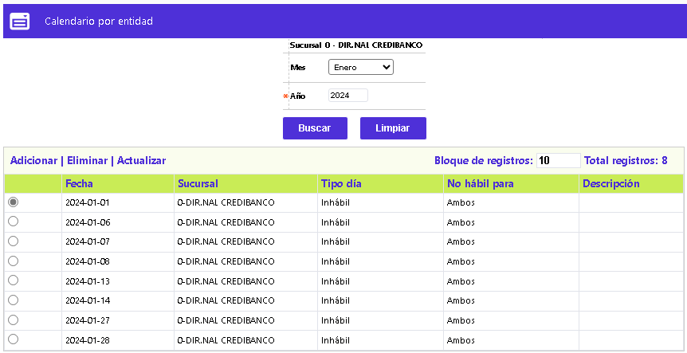
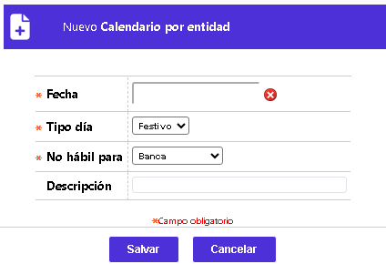

Calendario entidad
Mediante las opciones corporativa y de la entidad, se permite definir cuáles fechas no son hábiles para la atención al público y/o el procesamiento de movimiento transaccional, en la entidad financiera. Al momento de realizarse la instalación del aplicativo, se debe actualizar la información relativa tanto a los días festivos nacionales, como a los días no hábiles comunes para todas las entidades financieras de la instalación. El formulario contiene los enlaces: Actualizar, Eliminar y Adicionar. Adicionalmente, cuenta con un filtro de búsqueda.

Filtro: Se dispone de dos criterios, uno es por Año, se digita el año de interés y se activa el botón Buscar o, Mes, campo que dispone de lista de valores tipo combo, luego de seleccionar el mes de interés, se debe también digitar el dato del Año y se activa el botón Buscar.
Adicionar: Si el usuario invoca la opción Adicionar se despliega un formulario con los siguientes campos:

|
Fecha |
Campo obligatorio, en el que, mediante un calendario, se debe seleccionar la fecha para la cual se requiere definir el Tipo día. |
|
Tipo de día |
Campo obligatorio que, mediante una lista de valores tipo combo, de la que se debe optar entre Festivo o Inhábil, la naturaleza del mismo. |
|
No hábil para |
Campo obligatorio que, mediante una lista de valores tipo combo, de la que se debe optar entre Banca, Procesamiento o Ambas, la primera se relaciona con atención al público, la segunda si la inhabilidad es para proceso de movimiento y la última para ambas situaciones. |
|
Descripción |
Campo alfanumérico de 30 posiciones, no obligatorio, dentro del que es posible mencionar el motivo o la razón por la cual un día específico no es laborable o es festivo. |
Actualizar: Al activar ese enlace se despliega un nuevo formulario en el cual el único campo no modificable es Fecha.